Tests et validation - Système de convoyeur
1. Assemblage du convoyeur
Nous avons ici l'assemblage de la partie mécanique et de la partie électronqiue. Nous avons profité du temps supplémentaire pour améliorer notre convoyeur déjà fonctionnel et répondant au cahier de charge.
Premier prototype(minimal):
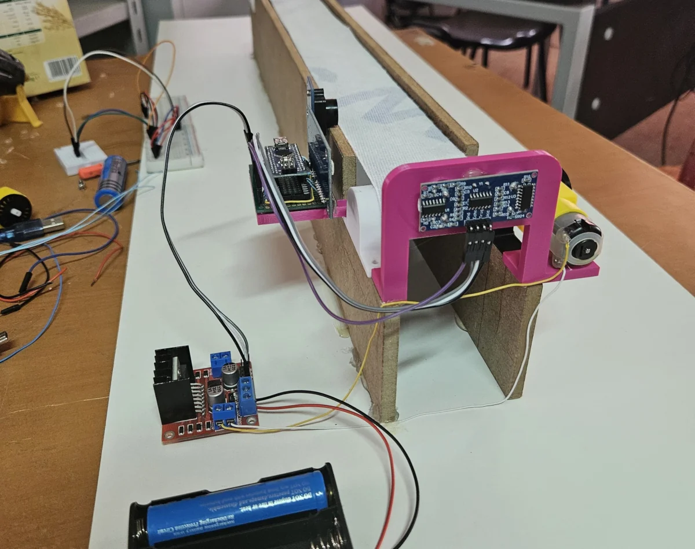 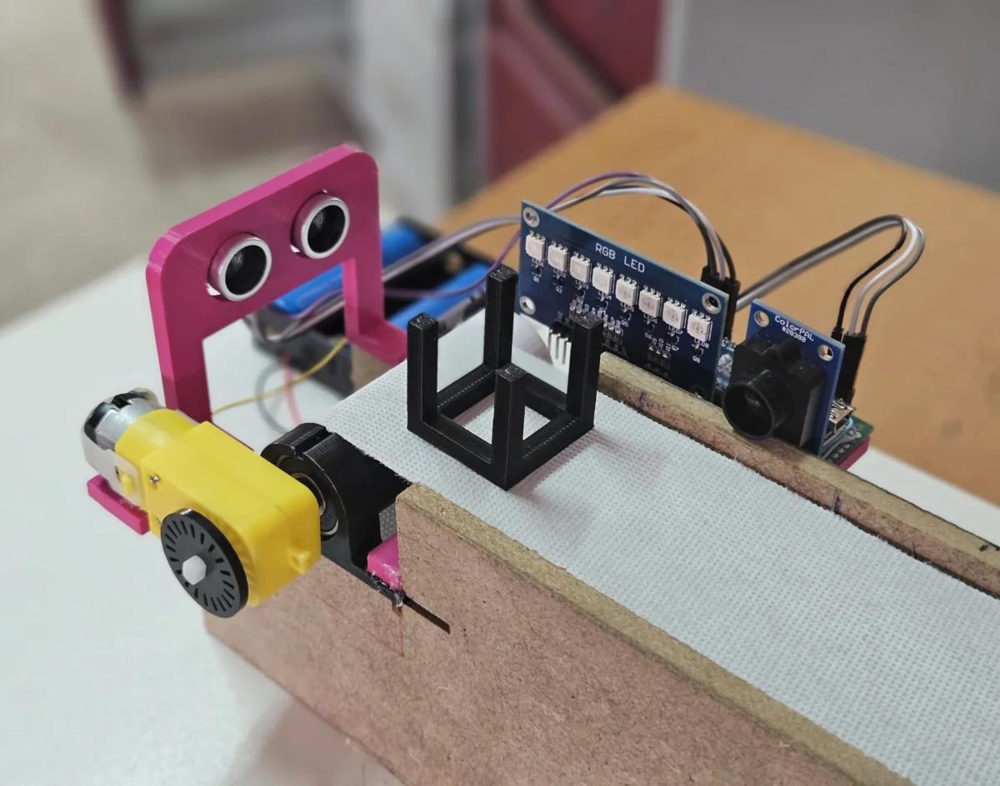 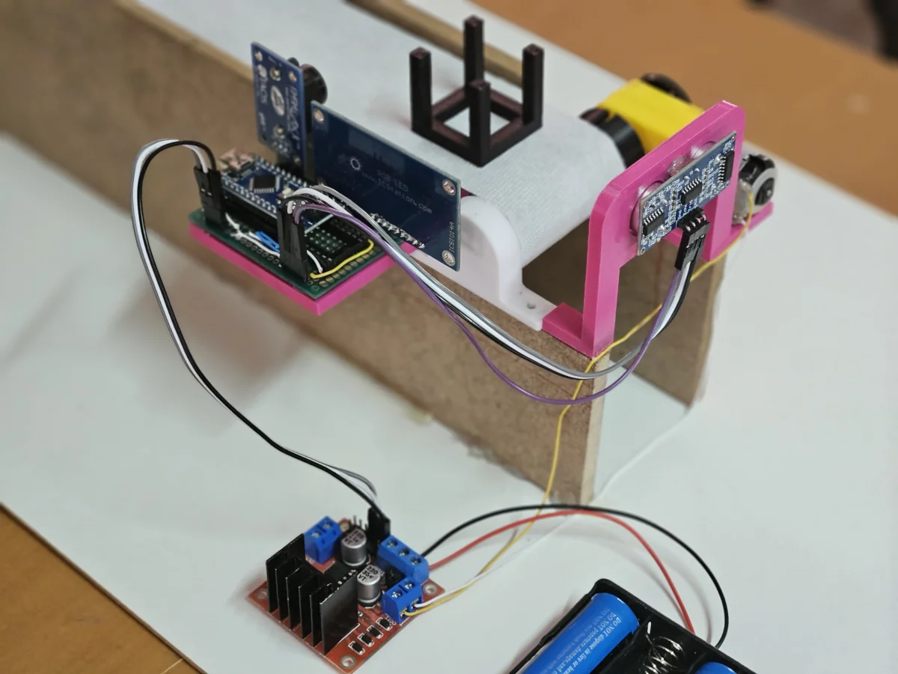 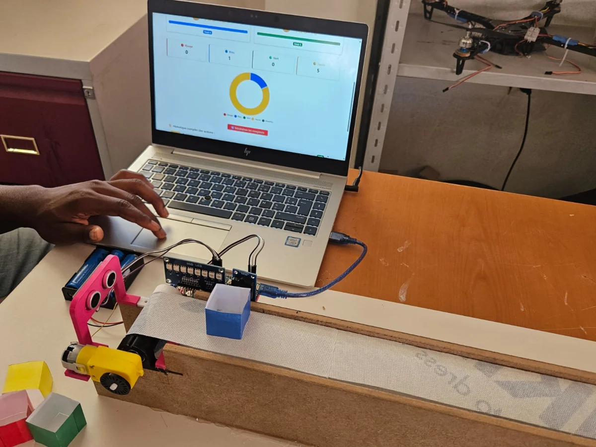Deuxième prototype:
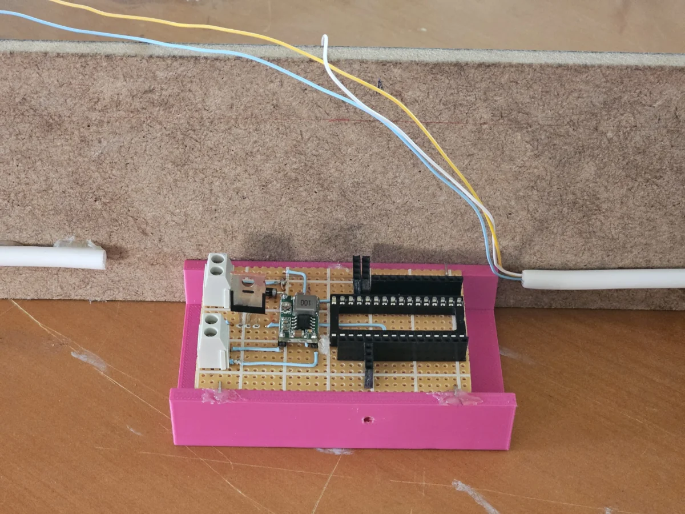 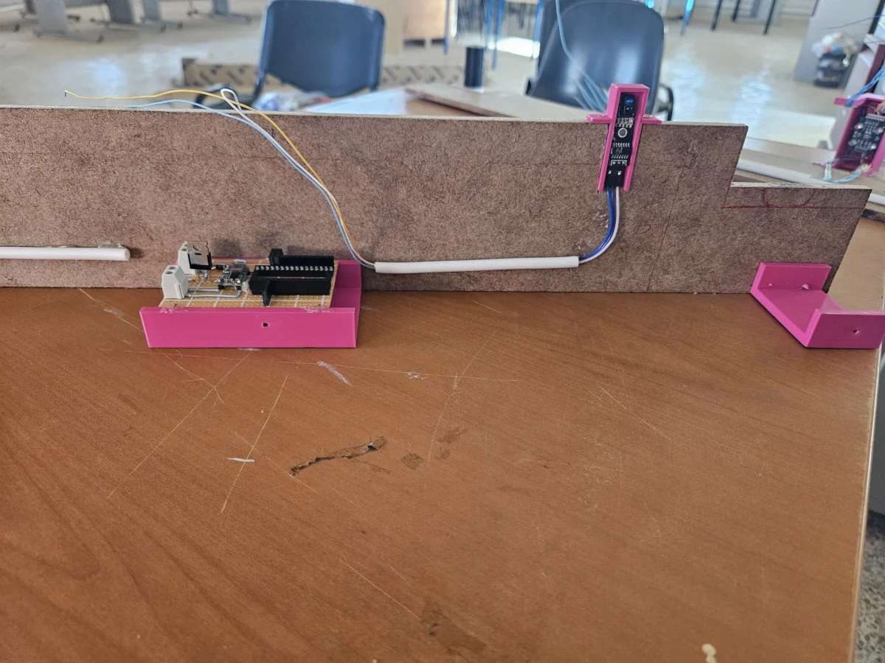 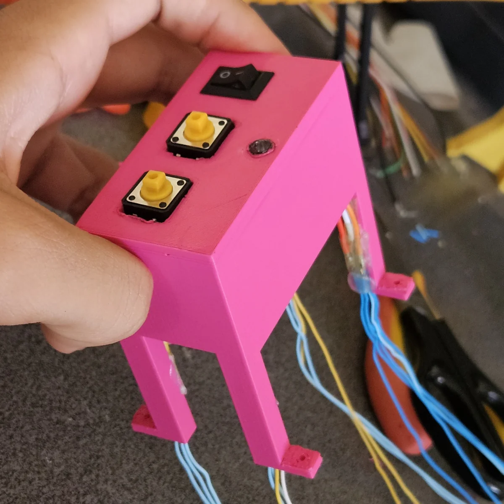 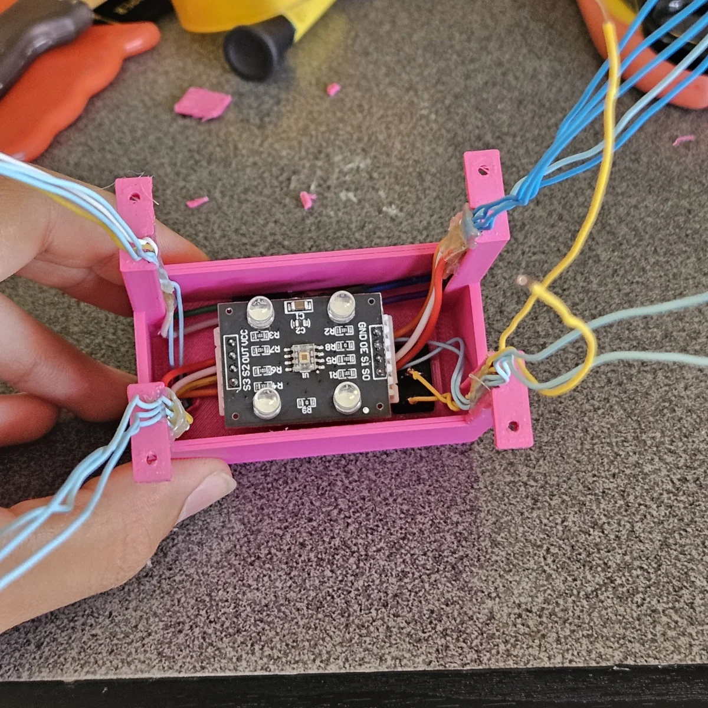 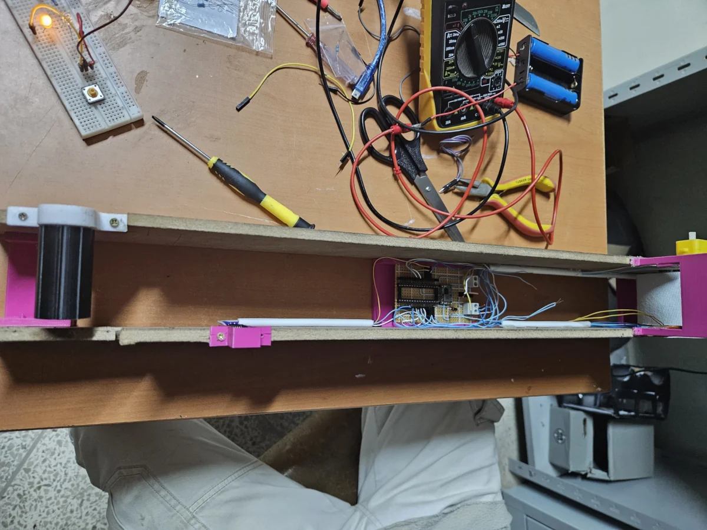
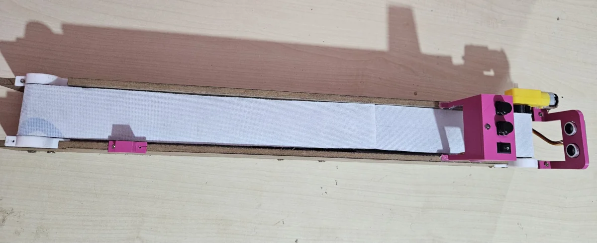
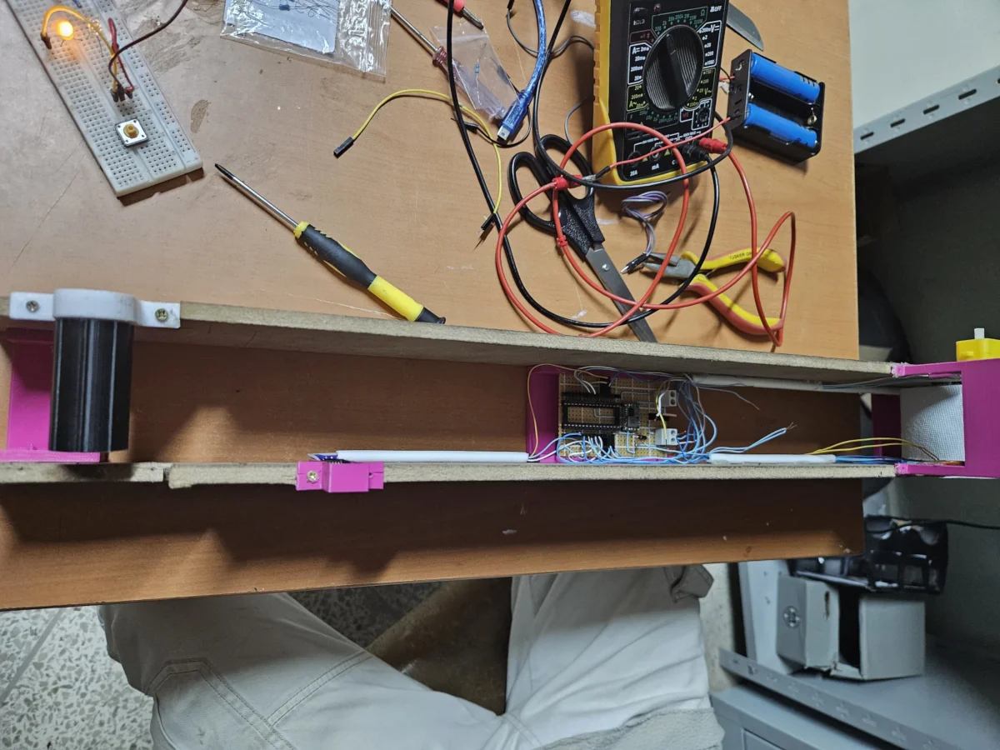
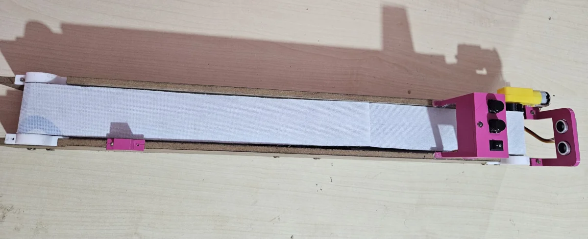
2. Protocole de test
Les tests individuels de chaque domaine ayant déjà été effectués, cette section est consacrée à l’évaluation du système global. L’objectif est de vérifier l’intégration de tous les modules pour garantir le bon fonctionnement de l’ensemble. Il s’agit donc de s’assurer que chaque domaine interagit correctement avec les autres dans un environnement complet et cohérent.
- Nous avons commencé par tester l'intégration de l'électronique et de la détection intelligente avec la structure du convoyeur à l'aide d'un petit code.
- Puis, nous avons testé le système avec l'interface web.
Fonctionnement minimal avec le premier prototype:
Ce premier prototype a permis de tester l’ensemble du système avant l’assemblage du deuxième prototype. En effet, il nous a permis de le mettre à l’épreuve et d’y apporter les ajustements nécessaires pour sa finalisation. Cette étape s’est révélée essentielle pour identifier les éventuelles failles techniques et optimiser les performances du système.
Avec les améliorations apportées et après l'assemblage, nous avons testé différents modules pour les dernières modifications. En voici quelques vidéos:
- Test du moteur, de la zone de détection, et de la détection de couleu:
- Zone de détection: [8; 11] cm
- Capteur Ultrason: précis
- Capteur de couleur: opérationnel
- Algorithme: satisfaisant
- Test des boutons marche et arrêt
- Bouton Marche: satisfaisant
- Bouton Stop: réactif
- Algorithme: fonctionnel
- Résultats:
- Résultats:
3. Résultats et démonstration
Après plusieurs tests et modifications, nous sommes parvenus à réaliser le système de convoyeur répondant au cahier de charge. En effet, le convoyeur respecte les contraintes de dimension(longueur et hauteur). Le tapis du convoyeur reste immobile et ne se meut que le système détecte des déchets. Ensuite, les déchets sont identifiés lorsqu'ils passent dans la zone du capteur de couleur. Ils seront collectés manuellement à la fin du convoyeur et mis dans la berne indiquée par le système. Nous avons aussi mis en place une interface web pour permettre un suivi en temps réel du tri des déchets.
Voici des images et videos montrant notre travail: